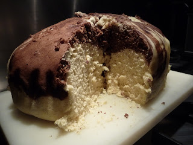

Roti Koekoes

De bovenstaande afbeelding toont het Indonesische gestoomde zoete brood
Roti Koekoes.
Ingredienten
- 500g zelfrijzend bakmeel
- 1 dl spa rood
- 1 dl melk
- 1 mespuntje zout
- 8 eierendooiers
- 4 eiwitten
- 2 vanillestokjes
- cacaopoeder
Bereiding
- De eiwitten stijfkloppen en de dooiers een voor een meekloppen
- De suiker erdoorheen roeren
-
Spawater en melk erbij en bij kleine beetjes het zelfrijzende bakmeel
- Nog even kloppen met de mixer
-
De bodem van de stomer bedekken met bakpapier of een theedoek en het
mengsel daar inleggen
- Laat het gaarstomen en in plakken snijden
Terug naar Homepage